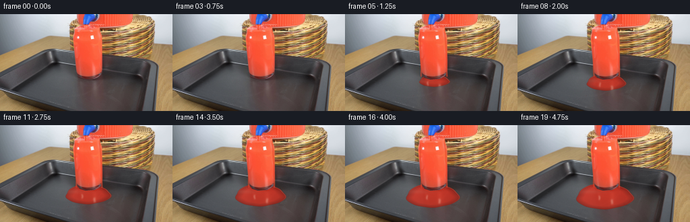
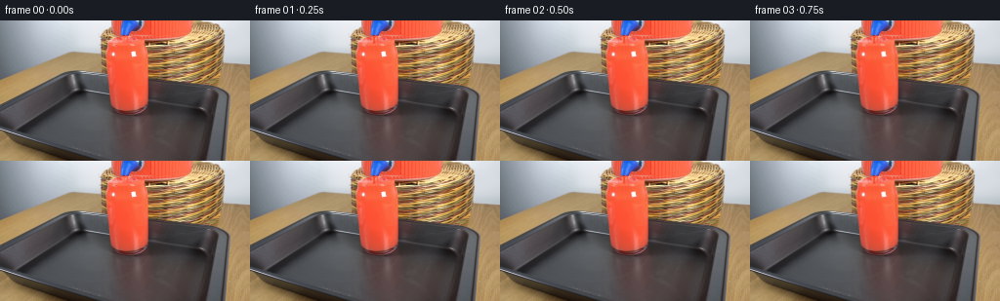
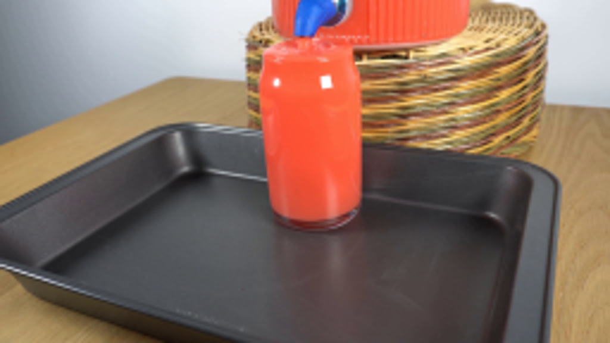
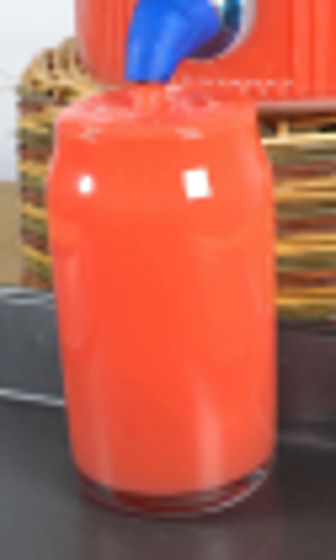
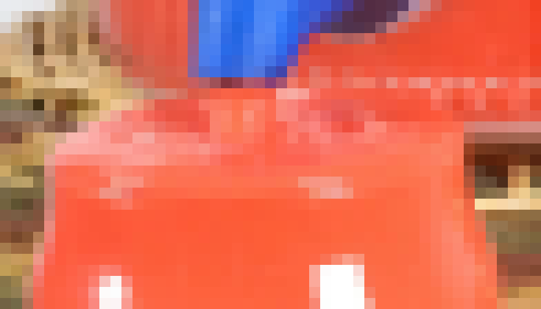
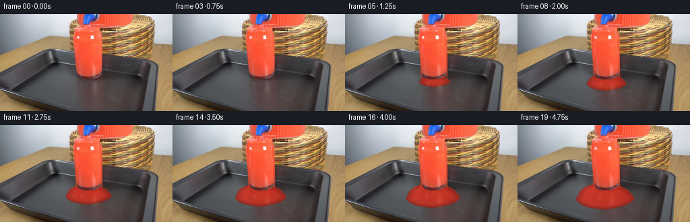
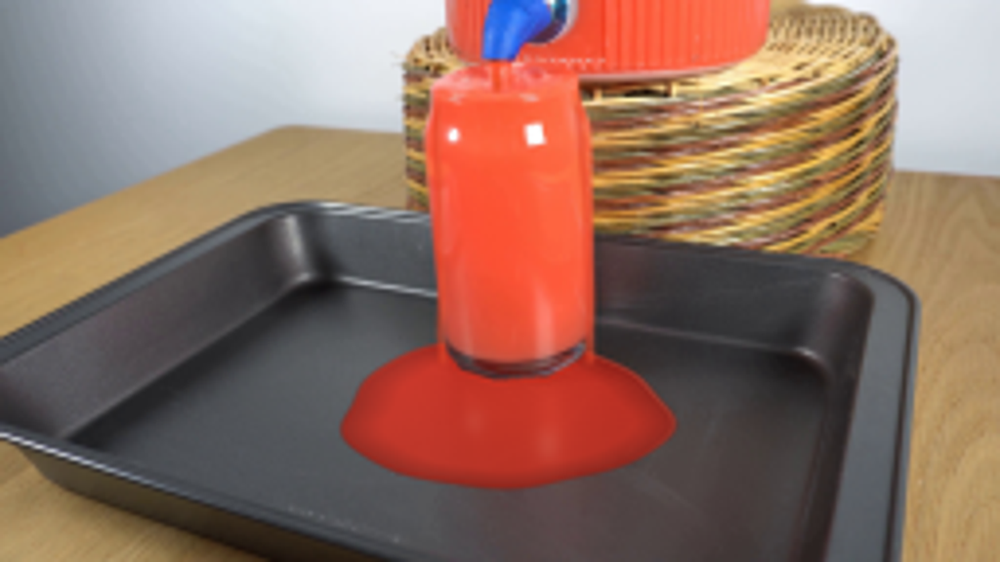
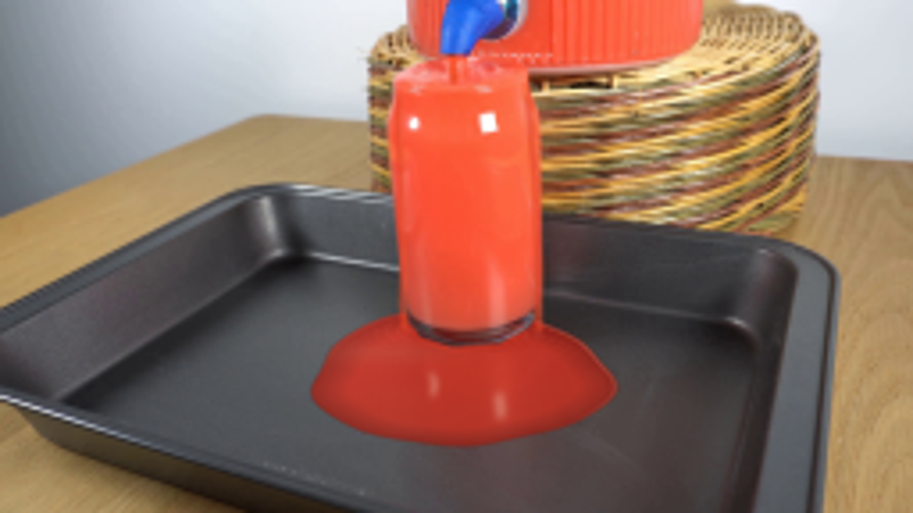

CODING AGENTS AS PIXEL WORLD MODELS
traex/GPT-6.1-Sol · 0090
点击播放 · 原生 RGB 像素
逐轮保存的候选
回放视频、检查图与代码变化。
每份候选均可单独播放。实际图片检查记录在下方工具轨迹中。
候选 01播放与检查图
点击播放 · 原生 RGB 像素

展开代码变化
--- 上一保存版本
+++ 本次保存版本
@@ -0,0 +1,176 @@
+from pathlib import Path
+import numpy as np
+from PIL import Image, ImageDraw
+from scipy.ndimage import gaussian_filter
+
+from artifact_io import save
+
+
+ROOT = Path(__file__).resolve().parent
+S = 4
+W, H = 256, 144
+first = np.asarray(Image.open(ROOT / 'first_frame.png').convert('RGB'))
+plate = np.asarray(Image.fromarray(first).resize((W*S, H*S), Image.Resampling.BICUBIC), dtype=np.float64)
+Y, X = np.mgrid[:H*S, :W*S].astype(float)
+X = (X+.5)/S
+Y = (Y+.5)/S
+
+
+def mix(image, color, alpha):
+ a = np.clip(alpha, 0, 1)[..., None]
+ return image*(1-a) + np.asarray(color)*a
+
+
+def mask_polygon(points):
+ im = Image.new('L', (W*S,H*S), 0)
+ d = ImageDraw.Draw(im)
+ d.polygon([(round(x*S),round(y*S)) for x,y in points], fill=255)
+ return np.asarray(im)/255.
+
+
+# The original glass remains the foreground occluder of the film on the tray.
+glass = mask_polygon([(111,24),(113,20),(123,17.9),(138,18),(145.7,21.9),
+ (149.5,34),(151.2,52),(152.2,81),(151,88),(148,92),
+ (140,96.3),(126.7,97.3),(118,94.4),(114.6,90),
+ (112.2,72),(110.4,44)])
+glass = gaussian_filter(glass,.65)
+
+
+def surface(image, t):
+ # A continuous short jet from the existing tap; most of its fall is hidden
+ # by the mouth of the full glass.
+ center = 127.15 + .18*np.sin(t*8.4+(Y-16)*1.0)
+ width = 1.03 + .14*np.sin(t*12-(Y-16)*1.2)
+ jet = np.clip((width+.28-np.abs(X-center))/.56,0,1)
+ jet *= np.clip((Y-15.6)/.5,0,1)*np.clip((24-Y)/.65,0,1)
+ c = np.zeros_like(image)
+ c[...,0] = 242+7*np.sin((Y-16)*.8-t*8)
+ c[...,1] = 72+11*np.cos((X-center)*1.5)
+ c[...,2] = 43+5*np.cos(t*7-(Y-16))
+ image = mix(image,c,jet*.88)
+ # Small shallow waves at the brim, retaining the photographed rim.
+ u=(X-128.1)/17.3
+ v=(Y-22.55)/4.0
+ mouth=np.clip((1-u*u-v*v)*4,0,1)
+ r=np.sqrt(((X-127.1)/1.8)**2+(Y-21.6)**2)
+ waves=np.sin(r*3.3-t*9.8)*np.exp(-r/7)
+ image = image + mouth[...,None]*waves[...,None]*np.array([4.0,3.9,2.6])
+ # Soft moving crests along the front surface, not a new glass outline.
+ crest_y=23.6 + 1.15*np.sqrt(np.maximum(0,1-u*u)) + .18*np.sin(X*1.4-t*8)
+ crest=np.exp(-((Y-crest_y)/.22)**2)*np.clip(1-u*u,0,1)
+ image=mix(image,[255,159,116],crest*.16)
+ # Small bubble/caustic flashes where the jet meets the surface.
+ for k in range(5):
+ a = t*(3.2+.3*k)+k*2.13
+ bx=127.2+np.cos(a)*(2.0+k*.75)
+ by=22.1+np.sin(a)*(.55+k*.17)
+ rad=.24 + .07*np.sin(t*6+k)
+ rr=np.sqrt((X-bx)**2+((Y-by)*1.7)**2)
+ bubble=np.exp(-((rr-rad)/.13)**2)*mouth
+ image=mix(image,[255,174,133],bubble*.30)
+ return image
+
+
+def overflow(image,t):
+ # The glass is already nearly full in frame zero. Thin overflow ribbons
+ # run down the sides, followed by a shallow accumulating puddle.
+ onset=np.clip((t-.3)/.7,0,1)
+ if onset <= 0:
+ return image
+ bottom=min(94,26+83*(t-.3))
+ front=np.clip((Y-25)/3,0,1)*np.clip((bottom-Y)/2,0,1)
+ left=111.7 + .024*(Y-27)+.27*np.sin(Y*.26-t*5)
+ right=147.4+3.9*(1-np.exp(-np.maximum(0,Y-25)/21))+.15*np.sin(Y*.27-t*4)
+ for xc, width in [(left,1.15),(right,1.28)]:
+ band=np.exp(-((X-xc)/width)**4)*front*onset
+ image=mix(image,[226,65,37],band*.54)
+ shine=np.exp(-((X-xc-.58)/.25)**2)*front*onset
+ shine *= (.60+.15*np.sin(Y*.8-t*13))
+ image=mix(image,[255,175,126],shine*.24)
+ # A slightly broader transparent sheet over the front of the jar. Its
+ # highlights travel downward while the solid glass itself stays still.
+ xc=130.4+.9*np.sin(Y*.09-t*.85)
+ band=np.exp(-((X-xc)/3.0)**4)*front*onset*glass
+ image=mix(image,[244,83,49],band*.075)
+ light=np.exp(-((X-xc-1.7)/.38)**2)*front*glass
+ pulse=(.5+.5*np.sin(Y*.39-t*12))**4
+ image=mix(image,[255,184,138],light*pulse*.085*onset)
+ return image
+
+
+def puddle(image,t):
+ age=max(0,t-.85)
+ if age==0:
+ return image
+ # Area grows with delivered liquid volume, with a small forward/downhill
+ # bias on the almost level sheet-metal tray.
+ growth=np.sqrt(age/3.9)
+ rx=13.0+29.0*growth
+ ry=4.0+15.0*growth
+ cx=134.1-4.8*growth
+ cy=96.0+10.3*growth
+ u=(X-cx)/rx
+ v=(Y-cy)/ry
+ theta=np.arctan2(v,u)
+ rr=np.sqrt(u*u+v*v)
+ boundary=1 + .032*np.sin(theta*3+.7)+.021*np.cos(theta*5-1.4)+.011*np.sin(theta*9+.5)
+ # Slightly noncircular stable wetting front rather than a perfect ellipse.
+ distance=(boundary-rr)*min(rx,ry)
+ wet=np.clip((distance+.30)/.65,0,1)
+ wet*=1-glass
+ wet*=np.clip(age/.22,0,1)
+ depth=np.clip(distance/5.0,0,1)
+ # Red absorption, dark meniscus, and broad softbox reflections are computed
+ # separately. Texture is sampled from the actual tray under the liquid.
+ tex=(plate[...,0]+plate[...,1]+plate[...,2])/3
+ color=np.empty_like(image)
+ color[...,0]=132+50*depth+(tex-50)*.4 + 10*(.5-v)
+ color[...,1]=32+12*depth+(tex-50)*.23
+ color[...,2]=24+7*depth+(tex-50)*.20
+ ripple_origin_x=150.7
+ ripple_origin_y=93.0
+ dr=np.sqrt((X-ripple_origin_x)**2+((Y-ripple_origin_y)*1.7)**2)
+ rip=np.sin(dr*2.1-t*13.2)*np.exp(-dr/15.0)*np.clip((t-1.1),0,1)
+ color+=rip[...,None]*np.array([2.5,2.0,1.5])
+ image=mix(image,color,wet*.94)
+ # A fine rolled edge reflects the room, while the outer contact line is dark.
+ edge=np.exp(-((distance-.32)/.24)**2)*wet
+ orientation=np.clip(.20-.40*np.sin(theta)+.25*np.cos(theta),0,1)
+ image=mix(image,[227,152,126],edge*orientation*.46)
+ outer=np.exp(-((distance+.02)/.2)**2)*wet
+ image=mix(image,[84,29,23],outer*.42)
+ # Reflection of the jar is soft, elongated in the tray's perspective and
+ # mostly hidden behind the jar itself, like in the source photograph.
+ reflection=np.exp(-((X-134)/14.0)**4-((Y-103.8)/14.0)**2)*wet
+ image=mix(image,[222,66,41],reflection*.18)
+ # Broad subdued reflection of the same lights that illuminate the glass.
+ lamp1=np.exp(-((X-(123.5-2*growth))/2.1)**4-((Y-(101+7*growth))/2.8)**4)
+ lamp1=gaussian_filter(lamp1,1.5*S)
+ lamp2=np.exp(-((X-140.3)/2.4)**4-((Y-(105+9*growth))/3.5)**4)
+ lamp2=gaussian_filter(lamp2,1.5*S)
+ image=mix(image,[243,199,172],wet*(lamp1*.11+lamp2*.13))
+ # Ripples by the right overflow impact are damped in the viscous shallow film.
+ highlights=np.clip(rip-.72,0,1)*wet*np.clip((distance-1)/2,0,1)
+ image=mix(image,[247,161,116],highlights*.12)
+ return image
+
+
+def render(t):
+ im=plate.copy()
+ im=puddle(im,t)
+ im=overflow(im,t)
+ im=surface(im,t)
+ im=np.clip(im,0,255).astype(np.uint8)
+ out=np.asarray(Image.fromarray(im).resize((W,H),Image.Resampling.LANCZOS)).copy()
+ # Do not resample the locked camera's untouched background. This also
+ # preserves the original image grain instead of filtering it frame-to-frame.
+ changed=np.max(np.abs(im.astype(float)-plate),axis=2)
+ mask=Image.fromarray(np.uint8(np.clip(changed*255,0,255))).resize((W,H),Image.Resampling.BOX)
+ unchanged=np.asarray(mask)==0
+ out[unchanged]=first[unchanged]
+ return out
+
+
+if __name__ == '__main__':
+ frames=np.stack([first.copy()]+[render(i/4) for i in range(1,20)])
+ save(frames,ROOT)
候选 02播放与检查图
点击播放 · 原生 RGB 像素


展开代码变化
--- 上一保存版本
+++ 本次保存版本
@@ -132,11 +132,11 @@
dr=np.sqrt((X-ripple_origin_x)**2+((Y-ripple_origin_y)*1.7)**2)
rip=np.sin(dr*2.1-t*13.2)*np.exp(-dr/15.0)*np.clip((t-1.1),0,1)
color+=rip[...,None]*np.array([2.5,2.0,1.5])
- image=mix(image,color,wet*.94)
+ image=mix(image,color,wet*.89)
# A fine rolled edge reflects the room, while the outer contact line is dark.
edge=np.exp(-((distance-.32)/.24)**2)*wet
orientation=np.clip(.20-.40*np.sin(theta)+.25*np.cos(theta),0,1)
- image=mix(image,[227,152,126],edge*orientation*.46)
+ image=mix(image,[227,152,126],edge*orientation*.60)
outer=np.exp(-((distance+.02)/.2)**2)*wet
image=mix(image,[84,29,23],outer*.42)
# Reflection of the jar is soft, elongated in the tray's perspective and
@@ -144,14 +144,25 @@
reflection=np.exp(-((X-134)/14.0)**4-((Y-103.8)/14.0)**2)*wet
image=mix(image,[222,66,41],reflection*.18)
# Broad subdued reflection of the same lights that illuminate the glass.
- lamp1=np.exp(-((X-(123.5-2*growth))/2.1)**4-((Y-(101+7*growth))/2.8)**4)
- lamp1=gaussian_filter(lamp1,1.5*S)
- lamp2=np.exp(-((X-140.3)/2.4)**4-((Y-(105+9*growth))/3.5)**4)
- lamp2=gaussian_filter(lamp2,1.5*S)
- image=mix(image,[243,199,172],wet*(lamp1*.11+lamp2*.13))
+ distortion=.4*np.sin(Y*.8-t*4)*np.exp(-((Y-101)/15)**2)
+ lamp1=np.exp(-((X-(123.5-2*growth)+distortion)/1.25)**4-((Y-(101+7*growth))/3.3)**4)
+ lamp1=gaussian_filter(lamp1,.7*S)
+ lamp2=np.exp(-((X-140.3+distortion)/1.7)**4-((Y-(105+9*growth))/3.7)**4)
+ lamp2=gaussian_filter(lamp2,.8*S)
+ image=mix(image,[247,209,187],wet*(lamp1*.32+lamp2*.35))
+ ambient=np.exp(-((X-108)/20)**2-((Y-99)/2.8)**2)*wet
+ image=mix(image,[179,144,124],ambient*.12)
# Ripples by the right overflow impact are damped in the viscous shallow film.
highlights=np.clip(rip-.72,0,1)*wet*np.clip((distance-1)/2,0,1)
- image=mix(image,[247,161,116],highlights*.12)
+ image=mix(image,[247,161,116],highlights*.30)
+ # Elliptical capillary waves spread from both down-running streams. They
+ # are tiny slopes catching light, not painted lines on the tray.
+ for ox,oy in [(151.2,94.4),(115.6,92.9)]:
+ d=np.sqrt((X-ox)**2+((Y-oy)*1.8)**2)
+ traveling=np.sin(d*2.05-t*12)
+ rings=np.clip(traveling-.65,0,1)*np.exp(-d/9.5)
+ rings*=wet*np.clip((distance-.8)/1.7,0,1)*np.clip(age/.5,0,1)
+ image=mix(image,[245,150,110],rings*.38)
return image
可观测工具轨迹
实际执行的命令与返回图片。
命令 1exit 0
/bin/bash -lc 'ls -la && cat prompt.txt && cat GENERATION_RULES.md'
命令 2exit 0
/bin/bash -lc "cat artifact_io.py && python - <<'PY'
from PIL import Image
im=Image.open('first_frame.png'); print(im.size); im.resize((1024,576)).save('.tmp/enlarged.png')
PY"命令 3exit 0
/bin/bash -lc "python - <<'PY'
from PIL import Image
im=Image.open('first_frame.png'); im.crop((100,0,163,105)).resize((378,630)).save('.tmp/glass.png')
PY"命令 4exit 0
/bin/bash -lc "python - <<'PY'
import numpy, PIL, scipy
print('available')
PY"命令 5exit 0
/bin/bash -lc "python - <<'PY'
from PIL import Image
im=Image.open('first_frame.png'); im.crop((106,8,155,36)).resize((784,448),Image.Resampling.NEAREST).save('.tmp/top.png')
PY"命令 6exit 0
/bin/bash -lc 'python generate.py'
命令 7exit 0
/bin/bash -lc "python - <<'PY'
from PIL import Image
Image.open('frames/19.png').resize((1024,576)).save('.tmp/last.png')
PY"命令 8exit 0
/bin/bash -lc "python generate.py && python - <<'PY'
from PIL import Image
import numpy as np
assert np.array_equal(np.asarray(Image.open('first_frame.png')),np.asarray(Image.open('frames/00.png')))
p=np.load('pixels.npz')['pixels'];print(p.shape,p.dtype)
Image.open('frames/19.png').resize((1024,576)).save('.tmp/last2.png')
PY"视觉工具实际返回图片 1

视觉工具实际返回图片 2

视觉工具实际返回图片 3

视觉工具实际返回图片 4

视觉工具实际返回图片 5

视觉工具实际返回图片 6

保存候选 2 份；完成命令 8 次；可验证图片返回 6 张。原始 API 响应与完整日志保留在本地。